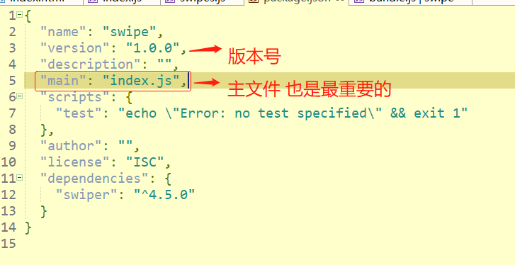

原文连接:https://www.cnblogs.com/jinfeixiang/p/10967815.html
本章学习小编会围绕以下知识点去为大家讲解：
1.什么是模块
2.什么是传统开发，传统开发的区别？
3.什么是模块化开发？
4.为什么使用模块化开发它的优点有哪些？
一：什么是模块
1.模块===包，简单说模块就相当于一个包(容器)
二：什么是传统开发，传统开发的缺点？
传统开发：整个网页我们写了一个js文件，所有的特效都写在这个js里。
缺点：耦合度太高(重复率)，代码关联性太强，不便于后期维护会造成全局污染

或者是这种：比如导航条是单独的一个js文件或轮播图是单独的js文件，发送请求次数过多，依赖模糊，难以维护
以上是传统开发形式，都被抛弃了。

三：使用模块化开发
1.为什么使用模块化开发(优点)
1.减少代码之间的关联
2.部署方便
3.更好的进行分离，按需加载
4.避免命名冲突，容易维护
3.什么是模块化？
node自带的规范 commonjs规范
commonjs是node的规范，运行在服务端，不是浏览器端，如果使用在浏览器端，需要使用对该文件进行打包翻译(借鉴工具 browserify，webpack，gulp等)
书写模块时候，对外暴露接口 module.expots={}或 exports.xxx=number或json
引入模块 require(路径)
直接在浏览器打开会报错，要借用打包工具（后面说）
可以看到我们在终端可以打印输出nav.js的变量
commonjs 暴露本质是一个叫exports的对象
module.export={}和exports.xxx=number/json的区别？
二者暴露本质是一样，都是暴露一个exports对象
commonjs是node的规范，但他是同步加载的，同步加载在浏览器是一个坑，只要一个环节卡住了，后面就没法执行。所有不建议使用，如果非要使用就待编辑打包。
web端
每个js都是一个模块，每个模块都必须有一个暴露接口，每个js文件有一个全局的方法叫 require() 用于引入模块
模块的分类：
1.node自带模块(包) path url fs
2.第三方模块 weui jquery axios zepto
引入第三方模块1.用<script src=”本地路径”>2.用网络地址3.就是用npm
npm网址： https://www.npmjs.com/
如果npm操作太慢 可以安装 npm 镜像
Npm 全名 node packsge manager node包管理工具 增删查改
下载
Npm install jquery
下载的存放位置在c盘
全局下载 在任何一个文件夹下都能使用这个包(或模块) 全局安装目录
如何全局安装
Npm install -g jquery
局部安装：在当前文件夹下有一个 package.json
Npm install jquery
局部安装就会在当前目录生成一个 node_modules的文件夹里
Npm install jquery –save
这个是下载运行环境(生产环境)的包比如jquery
Npm install jquery –save -dev
这个是下载开发环境所以来的包 比如 npm browserify
二者区别：前者下载—save 是上线时会被压缩的包，后者 -- save- dev
删除
Npm uninstall jquery：可以手动直接删除
查版本
Npm search jquery
更新
Npm updata jquery
3.自定义模块(我们自己写)
1.配置模块说明文件 npm init 就会生成一个 package.json 的文件
Main；index.js重要，意味着我们的主文件是index.js
Index.js 是这个包的输出文件，即便删除了 package.json 只要不改变 index.js的文件名就没事，一旦改了就报错,

Var obj=require(“jin”)
默认在node_require 文件夹下找这个包
在浏览器端，说require is notdefined 说明浏览器不支持 common.js，需要借鉴打包工具。
1.第一个打包工具 browserify
node简单补充：
node是javascript的环境，在node里面可以运行js文件。指令node+文件名